Para que serve este sistema
O Sistema de Despesas organiza tudo que a farmácia tem a pagar: aluguel, fornecedores, folha, contas de consumo, impostos e qualquer outra saída de dinheiro. Em vez de planilhas soltas, cada despesa vira um lançamento com vencimento, valor, forma de pagamento e uma conta do seu plano de contas — e a partir disso o sistema monta sozinho os relatórios que normalmente dariam horas de trabalho manual: quanto já foi pago, quanto falta, onde o dinheiro está concentrado e qual é a necessidade de caixa dos próximos dias.
Este manual foi escrito pensando em dois tipos de leitor:
Quem opera no dia a dia
Lança despesas, dá baixa quando paga, confere o extrato bancário. Comece pelas seções 1 a 4.
Quem olha o resultado
Lê o Dashboard, o DRE e a Previsão de Caixa pra decidir. Vá direto às seções 5 e 11.
Login e navegação
Entrando no sistema
Acesse o endereço do sistema e informe o seu nome de usuário e a senha cadastrados para você. Cada pessoa tem seu próprio login — isso é o que permite ao sistema saber quem fez cada lançamento e quem tem permissão pra cada tela.
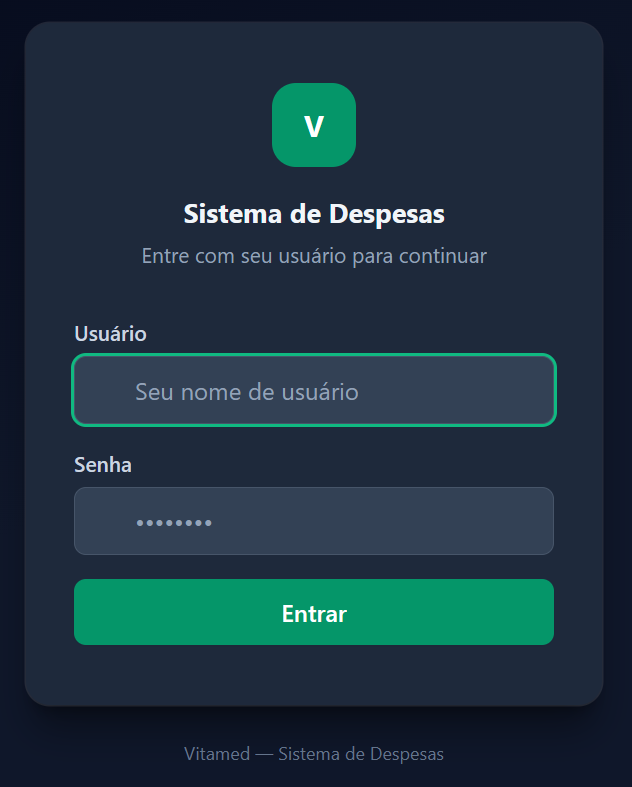
O que você vê depois de entrar
O menu principal fica numa barra lateral (ou no topo, dependendo da configuração escolhida nos Parâmetros do Sistema — seção 9.1) e está dividido por assunto. Essa organização não é arbitrária: ela separa o que você faz todos os dias (Dashboard, Lançamentos) do que você consulta periodicamente (Relatórios) e do que você configura raramente (Cadastros, Acessos, Parâmetros).
| Grupo | O que tem lá |
|---|---|
| Direto no menu | Dashboard e Lançamentos — as duas telas mais usadas no dia a dia, por isso não ficam dentro de nenhum submenu. |
| Relatórios | Extrato Bancário Mensal, Relatório DRE e Previsão de Caixa — leitura gerencial, sem edição. |
| Cadastros | Plano de Contas, Contas Bancárias, Formas de Pagamento de Despesa e Despesas Recorrentes — a base que alimenta tudo o resto. |
| Acessos | Usuários e Papéis e Permissões — quem entra no sistema e o que cada um pode fazer. |
| Parâmetros do Sistema | Ícone de engrenagem — configurações gerais (aparência, avisos, impressão, grupos do DRE). |
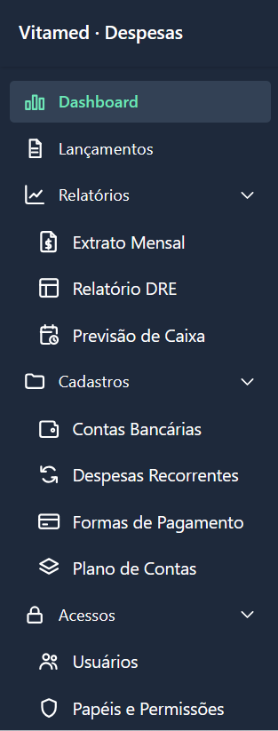
Menu lateral ou menu superior
Também em Parâmetros do Sistema, o administrador escolhe se o menu de navegação fica numa coluna fixa à esquerda (Lateral) ou numa barra horizontal no topo (Superior). O layout lateral aproveita melhor telas largas de computador, com espaço pra mostrar o nome de cada tela; o superior libera mais altura de tela, o que ajuda em notebooks menores. É uma preferência visual — nenhuma funcionalidade muda de um pra outro.
Encerrando a sessão
No rodapé do menu (ou no canto superior, no layout de menu superior) fica o nome de quem está logado e a opção de sair. Sempre encerre a sessão ao usar um computador compartilhado, especialmente num caixa ou balcão de atendimento — qualquer pessoa com a sessão aberta tem exatamente as permissões daquele usuário.
Dashboard: o resumo do período
É a tela inicial pra quem tem permissão de vê-la, e a que melhor responde à pergunta “como está a farmácia este mês?” em menos de um minuto. Tudo nela reage ao filtro de período no topo — mensal, trimestral, semestral ou anual — então o primeiro passo é sempre escolher o período que você quer analisar.
Escolhendo o período
| Período | Quando usar |
|---|---|
| Mensal | O dia a dia — fechar o mês, comparar com o mês anterior. |
| Trimestral | Suavizar meses atípicos (um 13º salário, uma compra grande pontual) e ver a tendência real. |
| Semestral | Avaliação de meio de ano — bom momento pra revisar contratos e fornecedores. |
| Anual | Visão de fechamento de ano, para planejamento do ano seguinte. |
Em qualquer uma dessas granularidades, o Dashboard sempre compara o período escolhido com o período imediatamente anterior de mesmo tamanho — um trimestre contra o trimestre anterior, um mês contra o mês anterior. É essa comparação que alimenta as setinhas de variação (crescimento em vermelho, queda em verde, já que aqui “queda” é uma notícia boa) no Ranking.
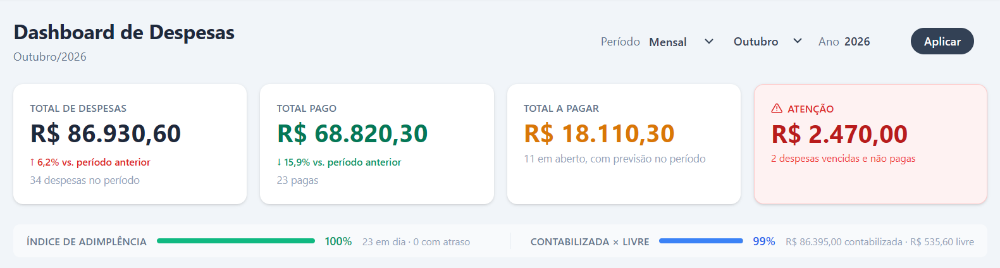
Os quatro cartões principais
| Cartão | O que significa |
|---|---|
| Total de Despesas | Soma de tudo que vence no período, pago ou não. É o tamanho real da conta. |
| Total Pago | O que já efetivamente saiu da conta bancária no período. |
| Total a Pagar | O que ainda está em aberto, com previsão de vencer dentro do período. |
| Atenção | Só aparece quando existe despesa vencida e ainda não paga — é o alerta que pede ação imediata. |
Índice de Adimplência
Mostra, entre tudo que foi pago no período, qual fração foi paga em dia (até a data de vencimento) contra o que foi paga com atraso. Um índice caindo mês a mês geralmente aponta um problema de processo — pagamento sendo lembrado tarde demais — mais do que falta de dinheiro.
Contabilizada × Livre
Toda despesa é marcada como contabilizada (entra formalmente na contabilidade da empresa, com nota fiscal) ou livre (uma saída de caixa que não compõe a contabilidade oficial, como um adiantamento ou uma despesa de caixa pequena). Esse indicador ajuda a enxergar rápido a proporção entre as duas sem abrir um relatório.
Gráficos: por forma de pagamento e por conta bancária
Dois gráficos de rosca mostram a distribuição do período por forma de pagamento (Pix, boleto, cartão...) e por conta bancária — úteis pra enxergar concentração: se quase tudo sai de uma única conta, por exemplo, vale reavaliar o fluxo de caixa daquela conta especificamente. Logo abaixo, um gráfico de evolução mostra como o total do período se distribui ao longo dos dias (num mês) ou dos meses (num período maior).
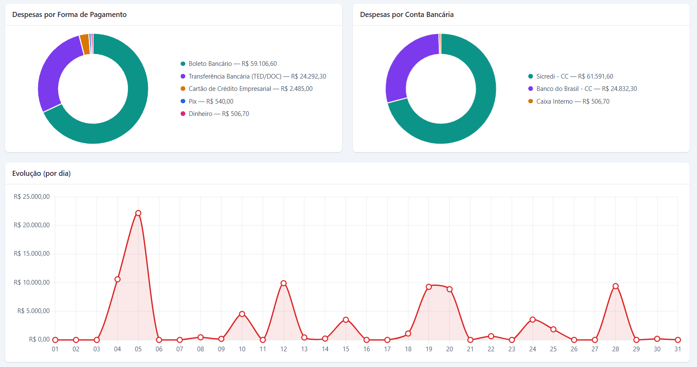
Ranking: as três abas
Na parte de baixo, o Ranking mostra quem mais pesa no período, em três visões diferentes — Plano de Conta, Grupo do DRE e Forma de Pagamento — cada item com sua colocação (1º, 2º, 3º...) e a variação contra o período anterior. É a ferramenta certa pra perguntas do tipo “no que eu mais gastei este trimestre, e isso cresceu ou caiu desde o trimestre passado?”. Clique em cada aba pra trocar a visão sem perder o período selecionado.
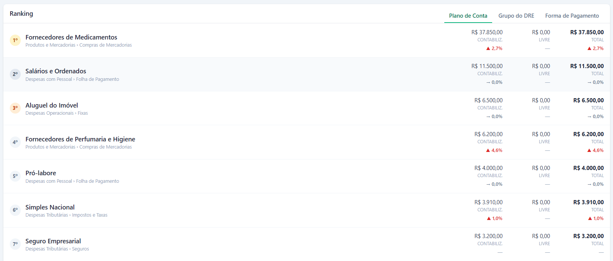
Lançamentos: registrar e pagar despesas
Esta é a tela que você vai abrir todos os dias. Cada linha da grade é uma despesa — uma conta a pagar — com vencimento, valor, forma de pagamento e situação. É aqui que o trabalho operacional do financeiro acontece: lançar contas novas, conferir o que vence hoje e dar baixa no que já foi pago.
Entendendo o status de cada despesa
| Vencida | Já passou da data de vencimento e ainda não foi paga. Precisa de atenção imediata. |
| Em Aberto | Ainda não venceu e ainda não foi paga — inclui tanto o que vence daqui a muito tempo quanto o que está prestes a vencer (esse “quase vencendo” é o que abastece a Central de Avisos, seção 8). |
| Paga | Já recebeu baixa — o dinheiro já saiu da conta. |
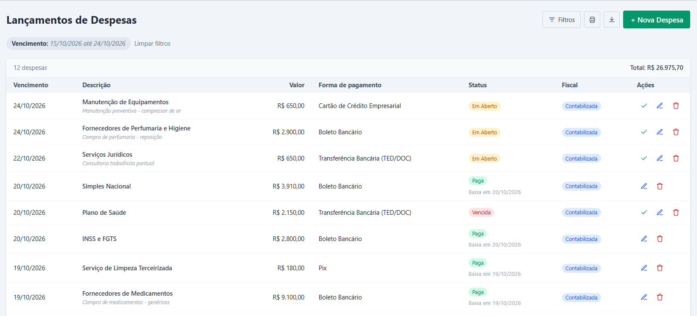
Filtrando a grade
O botão Filtros abre um painel com todas as combinações possíveis: período de vencimento, conta do plano de contas, forma de pagamento, conta bancária, status e se é contabilizada ou livre. Os filtros se combinam entre si — quanto mais específico, mais rápido você chega no lançamento que procura. Depois de aplicar, um resumo dos filtros ativos aparece acima da grade — clique no “x” de cada um pra removê-lo individualmente, sem precisar reabrir o painel inteiro.
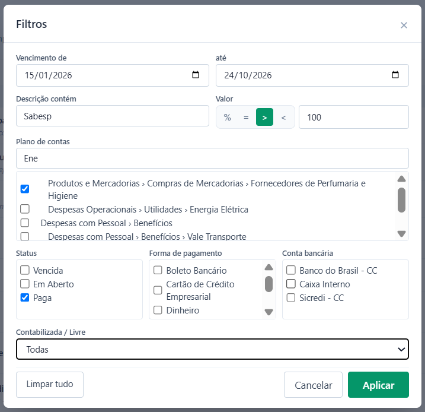
Lançar uma despesa nova
- 1. Clique em + Novo Lançamento.
- 2. Escolha a conta do plano de contas — só aparecem contas “finais”, que de fato recebem lançamento (veja a seção 6.1 pra entender por quê).
- 3. Preencha descrição, valor e data de vencimento.
- 4. Escolha a forma de pagamento prevista — ela já vincula a conta bancária de onde o dinheiro deve sair.
- 5. Marque se é contabilizada ou livre, e salve.
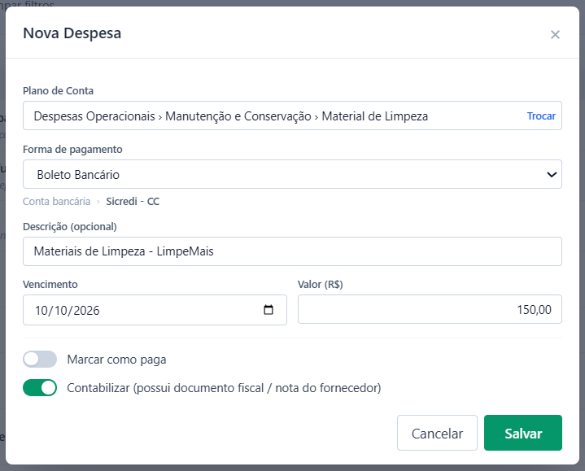
Editar ou excluir um lançamento
O ícone de edição, na linha de cada despesa, reabre o mesmo formulário do cadastro com os dados já preenchidos. Qualquer campo pode ser corrigido — inclusive de uma despesa já paga, embora nesse caso o cuidado deva ser maior: mudar valor ou data de vencimento de algo que já entrou num relatório de um mês fechado altera esse relatório retroativamente. O ícone de exclusão remove o lançamento por completo; essa ação não pode ser desfeita pela interface, então o sistema sempre pede uma confirmação explícita antes de excluir. Ambas as ações dependem do seu papel ter as permissões “Editar despesa lançada” e “Excluir despesa lançada” (seção 7.2) — sem elas, os ícones simplesmente não aparecem na sua tela.
Dar baixa (marcar como paga)
Clique no ícone de baixa na linha da despesa. Um modal resume o que você está pagando — nome, a qual conta do plano de contas pertence, valor — e pede a data de pagamento. Se na hora de pagar você usou uma forma diferente da planejada, pode trocar ali mesmo: a conta bancária exibida se atualiza sozinha conforme você muda a forma de pagamento. Se precisar alterar algo além disso (valor, vencimento, descrição), tem um link discreto que abre a edição completa daquele lançamento sem você precisar fechar e procurar de novo.
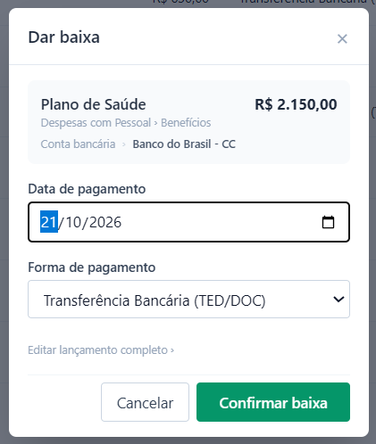
Imprimir e exportar
O ícone de impressora gera um relatório em PDF da grade exatamente como você filtrou — útil pra levar uma lista física pra conferência. O ícone de exportação gera uma planilha (.csv) com os mesmos dados, pronta pra abrir no Excel.
Despesas recorrentes
Aluguel, internet, sistema, plano de saúde — contas que se repetem mês após mês não precisam ser digitadas toda vez. Cadastre a recorrência uma única vez e o sistema lança sozinho a despesa em aberto, alguns dias antes do vencimento, pronta pra você só conferir e pagar.
As quatro periodicidades
| Periodicidade | Como funciona |
|---|---|
| Semanal | Escolha o dia da semana (ex.: toda segunda-feira). |
| Mensal | Escolha o dia do mês (ex.: todo dia 10). Em meses mais curtos que esse dia, vence no último dia do mês. |
| Bimestral | Escolha o “Mês de início do ciclo” e o dia — o sistema lança de 2 em 2 meses a partir dali. Março, por exemplo, gera Março / Maio / Julho / Setembro / Novembro / Janeiro. É diferente da Anual: aqui o mês escolhido é só o ponto de partida do ciclo, não o único mês do ano em que a despesa vence. |
| Anual | Escolha o mês e o dia — uma única vez por ano, sempre no mesmo mês. |
O sistema não cria todas as parcelas futuras de uma vez — ele gera cada ocorrência só quando ela se aproxima, dentro da janela de antecedência configurada em Parâmetros do Sistema (a mesma janela usada pela Central de Avisos, seção 8). Isso evita um cadastro com centenas de lançamentos futuros inúteis: a despesa nasce em aberto na tela de Lançamentos um pouco antes de vencer, pronta pra você conferir e pagar.
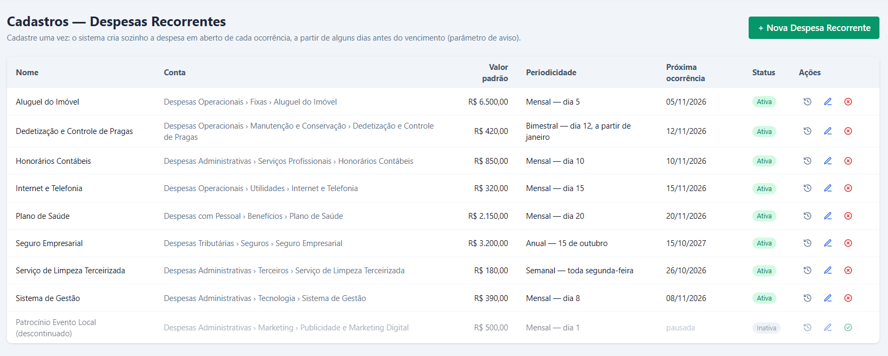
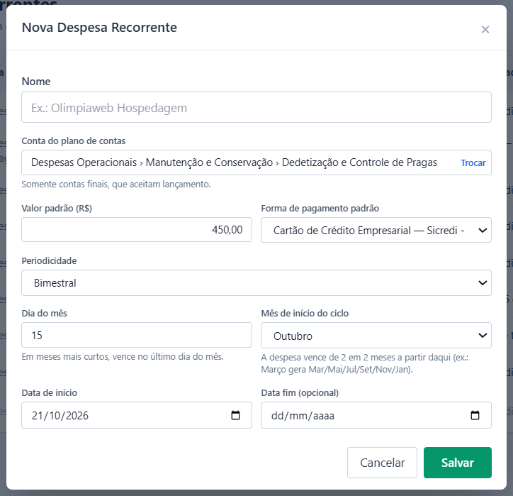
Pausar e reativar
Um contrato que acabou ou um serviço temporariamente suspenso pode ser inativado sem apagar nada — o histórico de despesas já geradas continua intacto. Reativar não gera retroativamente o período em que ficou pausada: a geração recomeça a partir do dia em que você reativa.
Histórico da recorrência
O ícone de histórico, na linha de cada recorrência, abre um resumo com tudo que já foi gerado a partir dela — data, status, valor, conta bancária e forma de pagamento de cada ocorrência — no mesmo formato da grade de Lançamentos. É a forma mais rápida de responder “esse aluguel está sendo pago certinho todo mês?”.
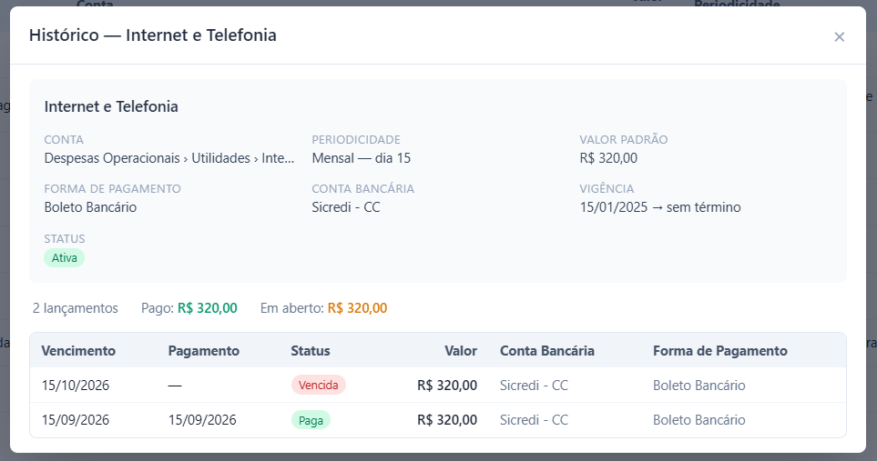
Relatórios
Três relatórios cobrem três perguntas diferentes: o dinheiro saiu como eu esperava? (Extrato Bancário), pra onde ele foi, estruturado contabilmente? (DRE) e quanto eu vou precisar nos próximos dias? (Previsão de Caixa).
5.1 Extrato Bancário Mensal
Escolha uma conta bancária e um mês: o relatório lista, dia a dia, tudo que foi efetivamente pago por aquela conta, com o total de cada dia e o total do mês no rodapé — no mesmo formato visual de um extrato bancário de verdade, inclusive com as saídas destacadas como débito. É a ferramenta certa pra conferir, linha por linha, contra o extrato real do banco no fechamento do mês.
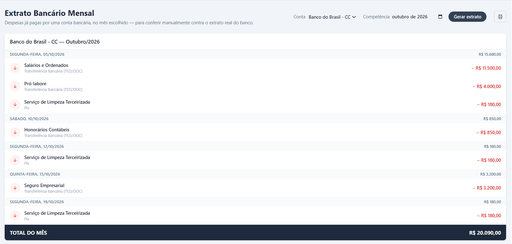
O botão de impressão gera uma versão em PDF deste mesmo extrato, pronta pra arquivar ou enviar ao contador — útil como comprovante formal de que o saldo bate com o banco no fechamento do mês.
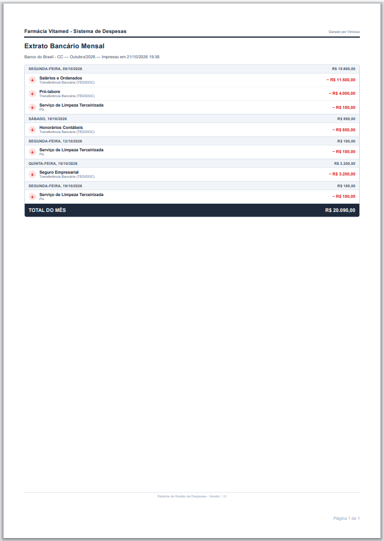
5.2 Relatório DRE
Mostra a despesa organizada na estrutura contábil: Grupo (a grande categoria, ligada ao Grupo do DRE) › Categoria › Conta. Tem duas formas de ver:
Visão Analítica
Desce até o lançamento individual dentro de cada conta — o detalhe completo.
Visão Sintética
Para no nível da conta, sem listar cada lançamento — o resumo pra uma leitura rápida.
Cada linha mostra também o percentual que representa do total do período (a chamada análise vertical) — é o que deixa claro, de cara, se a “Folha de Pagamento” é 15% ou 60% do seu gasto total, por exemplo.
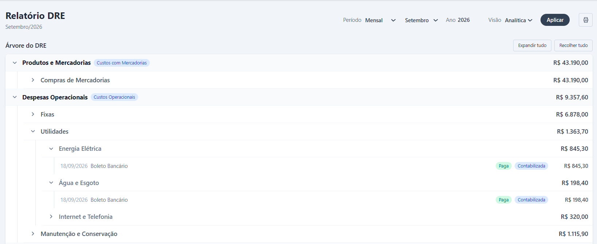
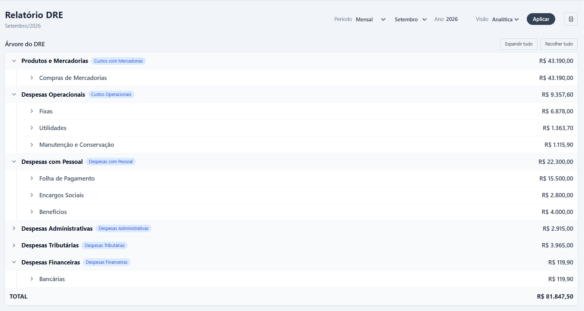
5.3 Previsão de Caixa
O único relatório que olha pra frente. Escolha um mês (nunca um mês que já passou) e o sistema junta duas fontes de informação: as despesas que já estão lançadas com vencimento naquele mês, e as ocorrências de despesas recorrentes que ainda vão ser geradas — simuladas, sem criar nada de verdade no sistema — pra te mostrar a necessidade de caixa completa, organizada por semana e por dia.
Dentro do mês atual, que já está parcialmente em andamento, o relatório também mostra o que já foi executado (pago) — assim você vê, num único lugar, o que já saiu, o que ainda está em aberto e o que vem por aí. Um destaque de “maior necessidade do período” aponta o dia em que você vai precisar de mais dinheiro em caixa — a pergunta exata que esse relatório existe pra responder.
Só é possível escolher o mês atual ou um mês futuro — meses que já passaram não aparecem no seletor, porque este relatório é uma ferramenta de planejamento, não de conferência histórica (pra isso, use o Dashboard, o DRE ou o Extrato Bancário).
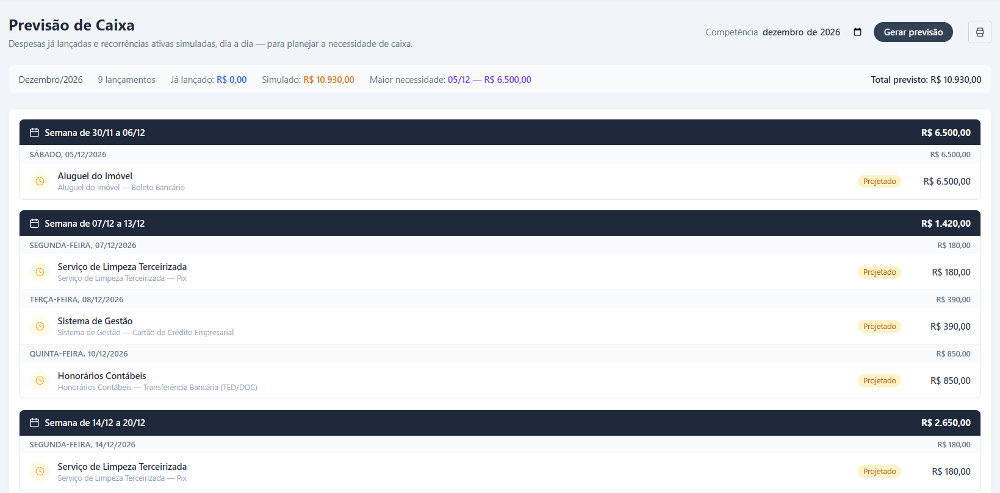
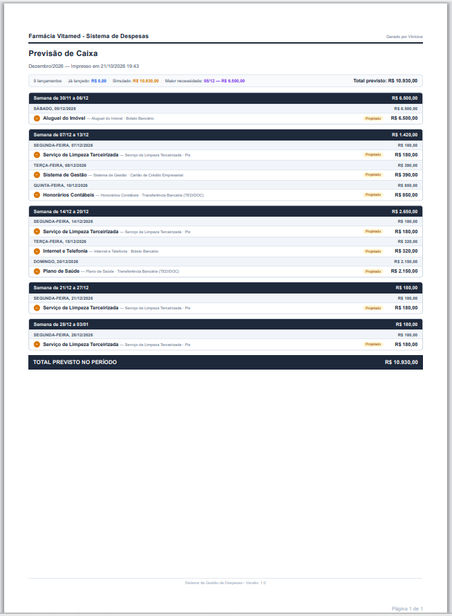
Cadastros: a estrutura por trás dos números
Antes de lançar a primeira despesa, vale entender quatro cadastros que sustentam todo o resto do sistema. Normalmente são configurados uma vez no início e mexidos raramente depois.
6.1 Plano de Contas
É a árvore que organiza toda despesa em três níveis: Grupo › Categoria › Conta. Só as contas no fim de um ramo (sem filhas) podem receber lançamento direto — Grupo e Categoria servem apenas pra agrupar e totalizar os relatórios, como o DRE.
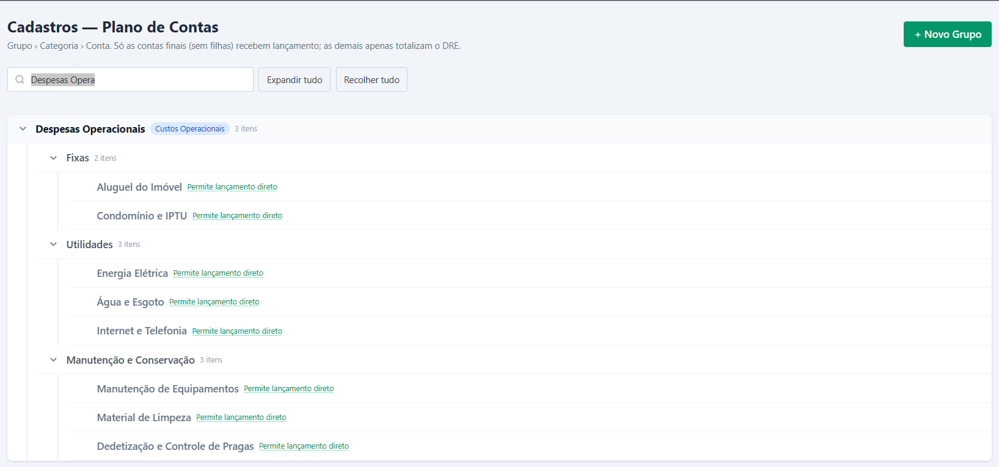
Cada Grupo (o nível mais alto) está ligado a um Grupo do DRE, configurado em Parâmetros do Sistema — é essa ligação que estrutura o Relatório DRE (seção 5.2). As setas de reordenar em cada linha ajustam a ordem de exibição dentro do mesmo nível. Uma conta, categoria ou grupo só pode ser inativado se não tiver nenhuma despesa ativa classificada nele (nem direta, nem herdada de um nível abaixo) — é uma proteção contra inativar algo que ainda está em uso, sem precisar conferir manualmente antes.
6.2 Contas Bancárias
As contas de onde o dinheiro efetivamente sai. Cadastre todas as contas bancárias que a farmácia usa pra pagar despesas — elas vão ser vinculadas às formas de pagamento no próximo cadastro. Uma conta bancária inativada deixa de aparecer nas opções de novos lançamentos, mas continua sendo exibida normalmente no histórico de despesas que já foram pagas por ela.
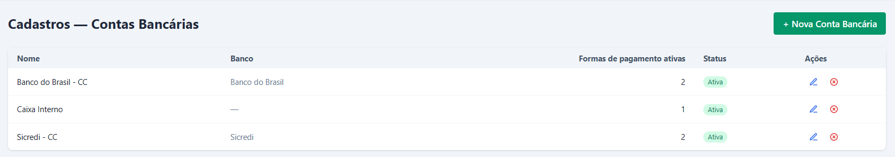
6.3 Formas de Pagamento
Pix, boleto, cartão de crédito, transferência — cada forma de pagamento está amarrada a uma conta bancária. É por isso que, ao escolher a forma de pagamento num lançamento, o sistema já sabe de qual conta aquele dinheiro vai sair, sem você precisar informar duas vezes.
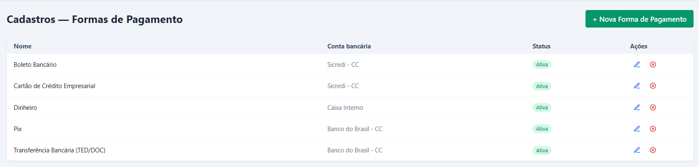
6.4 Despesas Recorrentes
Já apresentado em detalhe na seção 4 — está listado aqui porque também é, na essência, um cadastro: uma regra que você configura uma vez.
Acessos: quem entra e o que pode fazer
7.1 Usuários
Cada pessoa que usa o sistema tem um cadastro de usuário, com nome, senha e um papel associado. Um usuário inativado perde o acesso imediatamente, mesmo que ainda esteja logado em algum lugar — e todo o histórico de lançamentos feitos por ele continua preservado, com o nome dele registrado em cada um.
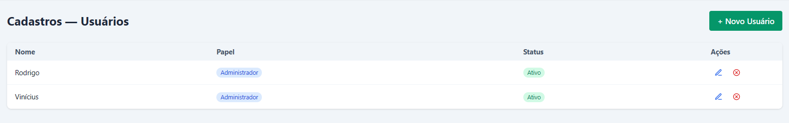
7.2 Papéis e Permissões
Um papel é um conjunto de permissões (ex.: “Financeiro”, “Gerência”). Em vez de configurar o acesso pessoa por pessoa, você configura o papel uma vez e atribui esse papel a quantos usuários precisar. Cada permissão é específica por tela e por ação — por exemplo, alguém pode ter permissão pra ver Lançamentos sem poder excluir um. As permissões aparecem organizadas por módulo, exatamente na mesma estrutura do menu — Dashboard, Lançamentos, Relatórios › Extrato Bancário / Relatório DRE / Previsão de Caixa, e cada cadastro dentro de Cadastros — o que deixa fácil montar um papel “só vê relatórios” ou “só lança despesas”, por exemplo. Algumas permissões dependem de outra (não dá pra “excluir” sem também poder “visualizar”); o sistema marca essa dependência automaticamente ao montar o papel.
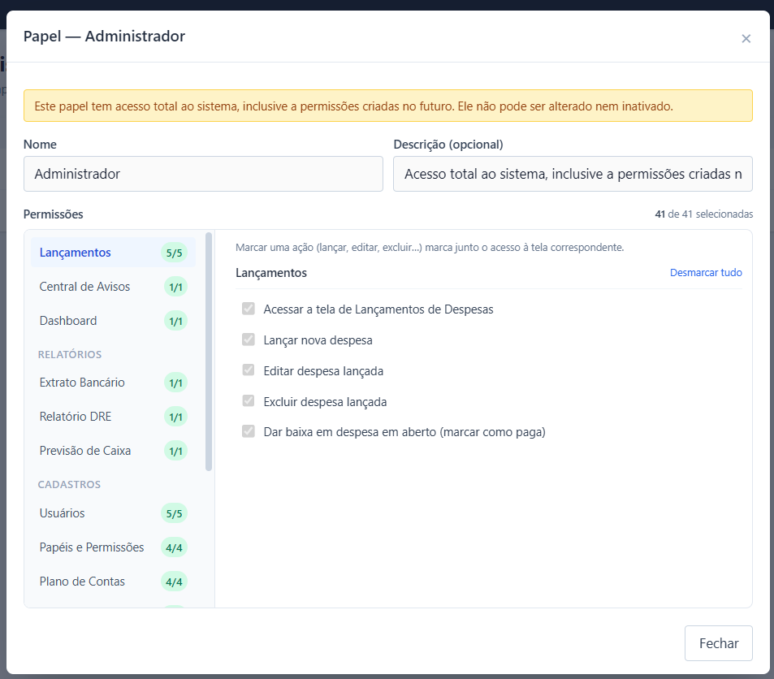
Central de Avisos
Uma lista objetiva de tudo que está vencido ou a vencer dentro de uma janela de dias configurável (em Parâmetros do Sistema, seção 9.2) — pensada pra ser a primeira tela que você abre no dia, antes mesmo do Dashboard. As despesas mais atrasadas aparecem primeiro, e você pode dar baixa direto por ali, sem precisar ir até Lançamentos.
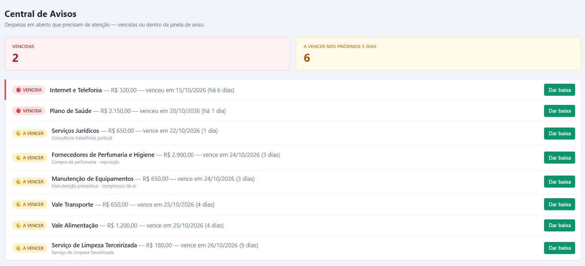
Parâmetros do Sistema
Quatro blocos de configuração que valem pra todo mundo que usa o sistema — normalmente mexidos só por um administrador, raramente no dia a dia.
| Bloco | O que configura |
|---|---|
| 9.1 Aparência | Tema padrão (Claro/Escuro), formato do menu (Lateral/Superior) e se o menu lateral já abre colapsado para quem nunca definiu uma preferência própria. |
| 9.2 Central de Avisos | “Dias de antecedência para aviso de vencimento” — quantos dias antes do vencimento uma despesa em aberto passa a aparecer como “A vencer”. |
| 9.3 Impressão | Liga ou desliga um cabeçalho e rodapé padrão em todo relatório impresso — ver seção 10. |
| 9.4 Parâmetros DRE | Lista dos Grupos do DRE (criar, renomear, ativar/inativar) que servem de base pro Plano de Contas (seção 6.1). |
Cada bloco desta tela é salvo de forma independente — clicar em “Salvar” no card de Aparência não afeta o que está configurado no card de Impressão, e vice-versa.
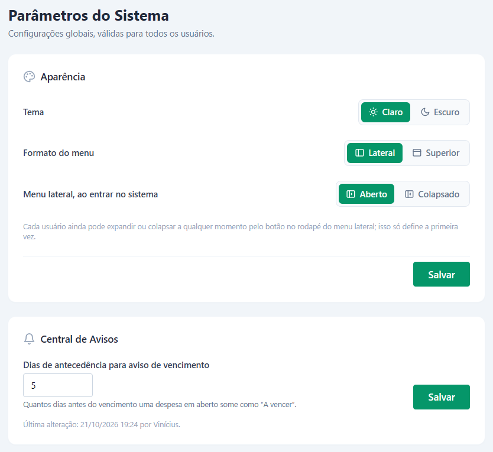
9.3 Impressão, em detalhe
Quando “Imprimir cabeçalho e rodapé padrão do sistema” está desligado, as impressões continuam exatamente como sempre foram — só o conteúdo do relatório, sem nada extra. Ao ligar, aparecem quatro opções:
| Nome no cabeçalho | Texto livre (ex.: “Farmácia Vitamed”) que aparece no topo de toda impressão, acima do título do relatório. |
| Texto do rodapé | Opcional — repete no rodapé de cada página impressa. Deixe em branco pra não mostrar nada ali. |
| Mostrar quem gerou | Exibe o nome do usuário logado que gerou aquela impressão — útil para rastreabilidade. |
| Mostrar paginação | Adiciona “Página X de Y” em cada folha, essencial em relatórios longos como o Extrato Bancário ou a Previsão de Caixa. |
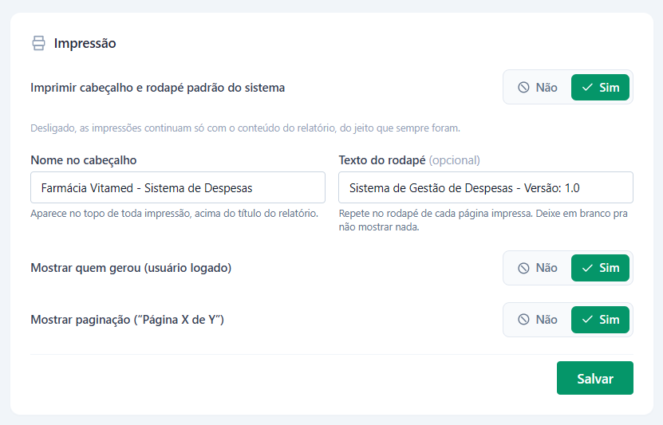
Impressão em todo o sistema
O ícone de impressora aparece em Lançamentos, Extrato Bancário, Relatório DRE e Previsão de Caixa, sempre no mesmo lugar e com o mesmo comportamento: gera o relatório de acordo com o que está filtrado na tela naquele momento e abre o diálogo de impressão do navegador direto, sem abrir uma aba nova pra você ter que fechar depois.
Em Parâmetros do Sistema (seção 9.3) dá pra ligar um cabeçalho e rodapé padrão — com o nome da farmácia, quem gerou o relatório e numeração de página — que passa a aparecer automaticamente em toda impressão, nos quatro relatórios ao mesmo tempo: Lançamentos, Extrato Bancário, Relatório DRE e Previsão de Caixa.
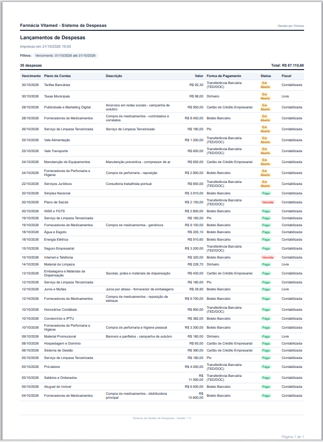
Como ler os números pra decidir melhor
Um sistema só vale o que a leitura dos dados entrega. Aqui vai uma rotina sugerida, construída ao longo de anos acompanhando negócios de pequeno e médio porte — adapte à realidade da sua farmácia.
Diária
Central de Avisos
Abra antes de qualquer outra tela. Dê baixa no que foi pago, confirme o que vence hoje.
Semanal
Lançamentos + Extrato
Revise tudo que entrou na semana e confira o Extrato Bancário de cada conta usada.
Mensal
Dashboard + DRE + Previsão
Feche o mês, entenda a estrutura do gasto e planeje o mês seguinte com a Previsão de Caixa.
Sinais pra prestar atenção
| O que você vê | O que pode estar acontecendo |
|---|---|
| Índice de Adimplência caindo mês a mês | Problema de processo — contas sendo lembradas tarde — mais provável que falta de caixa. |
| Um item isolado no topo do Ranking, bem acima dos demais | Vale investigar se dá pra negociar com esse fornecedor ou revisar o contrato. |
| Um Grupo do DRE crescendo período após período | Sinal de que algo estrutural mudou ali — vale entender a causa antes que vire hábito. |
| “Maior necessidade do período”, na Previsão de Caixa, muito concentrada num único dia | Negocie prazos com fornecedores pra distribuir melhor as saídas ao longo do mês. |
Perguntas frequentes
Por que não vejo um menu que eu sei que existe?
O menu mostra só o que o seu papel de acesso permite (seção 7.2). Fale com um administrador se precisar de acesso a mais telas.
Esqueci minha senha. E agora?
Não existe recuperação automática. Peça a um administrador pra redefinir sua senha em Acessos › Usuários.
Qual a diferença entre “Em Aberto” e “A Vencer”?
Na tela de Lançamentos as duas aparecem juntas como “Em Aberto” pra simplificar a leitura. Por trás, o sistema diferencia: “A Vencer” é o que está dentro da janela de dias configurada em Parâmetros (é o que entra na Central de Avisos); o restante do que ainda não venceu é só “Em Aberto”.
Posso editar uma despesa que já foi paga?
Sim, dentro das permissões do seu papel. Edite com cuidado — alterar valor ou data de um lançamento já pago muda os relatórios de períodos fechados.
O que acontece se eu pausar uma despesa recorrente?
Ela para de gerar novas despesas a partir de agora. O que já foi gerado antes continua como está. Reativar não gera retroativamente o período em que ficou pausada.
A Previsão de Caixa deixa escolher um mês que já passou?
Não — é uma ferramenta de planejamento, então só aceita o mês atual em diante. Pra olhar pra trás, use o Dashboard, o DRE ou o Extrato Bancário.